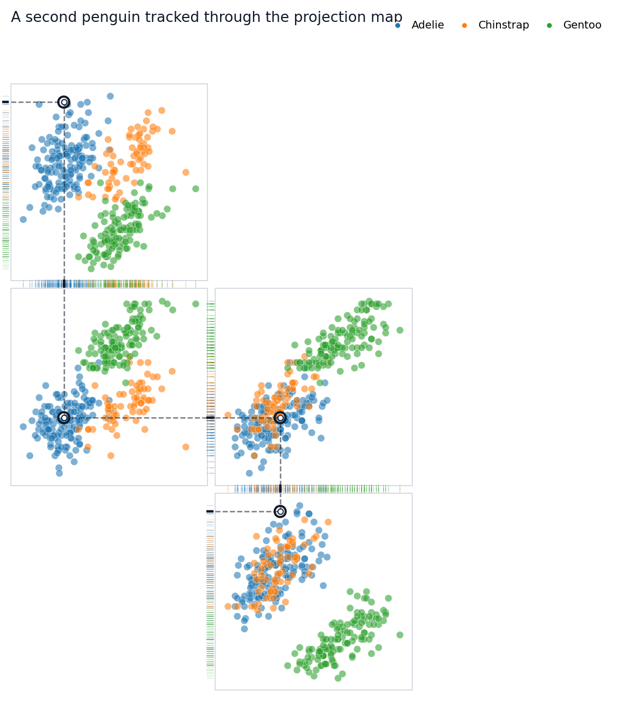

Build a projection-rug fingerprint for the Palmer Penguins dataset.
This tutorial walks through the object-oriented Rugprint workflow using the Palmer Penguins dataset. The goal is not to make a complete pairplot. The goal is to choose a small set of bivariate projections and arrange them so one highlighted observation can be followed through shared one-dimensional rugs.
Setup
Start by loading the demo data and the object-oriented constructor. The load(...) function returns a Rugprint object; call .plot() when you are ready to draw.
The cleaned demo dataset keeps the four numeric measurements used throughout the vignette and drops rows with missing values.
features = ["bill_length_mm","bill_depth_mm","flipper_length_mm","body_mass_g",]group ="species"penguins[features + [group]].describe(include="all")
bill_length_mm
bill_depth_mm
flipper_length_mm
body_mass_g
species
count
342.000000
342.000000
342.000000
342.000000
342
unique
NaN
NaN
NaN
NaN
3
top
NaN
NaN
NaN
NaN
Adelie
freq
NaN
NaN
NaN
NaN
151
mean
43.921930
17.151170
200.915205
4201.754386
NaN
std
5.459584
1.974793
14.061714
801.954536
NaN
min
32.100000
13.100000
172.000000
2700.000000
NaN
25%
39.225000
15.600000
190.000000
3550.000000
NaN
50%
44.450000
17.300000
197.000000
4050.000000
NaN
75%
48.500000
18.700000
213.000000
4750.000000
NaN
max
59.600000
21.500000
231.000000
6300.000000
NaN
Choose Candidate Projections
rank_pair_separation(...) is a lightweight helper. It computes species centroids for every feature pair and ranks pairs by their mean between-species centroid distance. This is not a statistical test; it is a practical way to find projection panels that may separate groups visually.
A Rugprint layout is a dictionary from projection pair to (row, column). Missing cells stay empty. For this tutorial, the layout is a chain of shared variables:
bill_length_mm links the top panel to the center-left panel.
flipper_length_mm links the center-left panel to the center-right panel.
body_mass_g links the center-right panel to the lower-right panel.
That chain is what lets the highlighted observation feel continuously tracked across the map.
The object stores the data, projections, layout, group colors, highlight row, and diagram styling. This makes it easy to reuse the same map while changing the highlighted observation or plotting options.
In diagram mode, Rugprint removes most axis furniture by default. The rugs, local dashed guides, and subtle inter-panel connectors do the explanatory work.
Use .with_highlight(...) to keep the same map specification and change only the tracked observation. This is useful for comparing how individual penguins reappear across several measurement spaces.
fig = rp.with_highlight(12).plot( title="A second penguin tracked through the projection map",)

You can pass an integer row position or a dataframe index label to highlight. The emphasized point appears in every projection panel. Local dashed guides show its one-dimensional x and y projections, while dotted segments in shared rug gutters connect adjacent panels that share the same variable.
Add Labels When You Need Them
The default diagram hides axis labels and tick labels because labels can interrupt rug connections. For explanatory notebooks or presentations, you may temporarily turn labels back on.
Rugprint is inspired by Edward R. Tufte’s projection/rug display idea in The Visual Display of Quantitative Information (Graphics Press, 1983).
Practical Tips
Start with a few projections rather than every pair. Arrange panels so neighboring projections share one variable. Use rug_edges="shared" when you want the highlighted observation to feel threaded through the map. If the diagram starts to look like a pairplot, reduce labels and ticks before adding more panels.